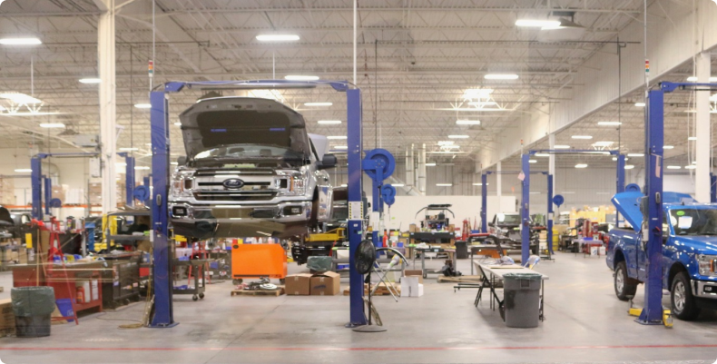

Многим поклонникам автотранспорта на бензиновом топливе или дизельном трудно представить, что электромобили могут потеснить популярный сейчас транспорт. Тем не менее, продажа подобного автотранспорта медленно, но уверено растет. Это обусловлено рядом причин, в особенности интересными достоинствами электрокаров. Как уверяют эксперты мировой автопромышленности, будущее — за электромобилем.
 Электрокар, как и любой другой автомобиль, рано или поздно нуждается в ремонте. Если авто нельзя включить, он не поворачивает или осуществляется перегрев во время его движения, необходим ремонт электротранспорта.Наиболее часто встречающиеся поломки:
- Машина перегревается и прекращает работу плато управления. Если поврежденные детали не подлежат ремонту, осуществляется замена.
- Неисправная управляющая микросхема. Это самый важный компонент электромобиля, его поломка приводит к выходу машины из рабочего состояния. При диагностировании выясняется, требуется ли полная замена микросхемы.
- Поломки аккумулятора. Порой на клеммах нет нормального напряжения или теряется прежняя емкость. Все это можно решить и отремонтировать в сервисном центре.
- Неисправность контроллера. Когда данный компонент часто «барахлит», требуется его заменить.
- Проблемы с колесами. Колеса — самые уязвимые элементы электромобиля. Если лопается шина, нужна замена.
Заметим, что каждый электрокар имеет свои особенности обслуживания и починки. Ремонт электромобиля является достаточно сложной процедурой. Требуется опыт и необходимые навыки, чтобы осуществить ремонт. Самостоятельно чинить аккумуляторную батарею – опасное дело, в связи с этим ремонт электрокара требует настоящего мастера. На российском рынке в последние годы пользуются спросом привозные б/у электромобили. Такие автомобили требуют особого ухода. Отремонтировать электромобиль с гарантией, привезенный из-за границы возможно лишь в спец сервисных центрах.
Задайте их специалиступо телефону горячей линии,закажите звонок или напишите нам